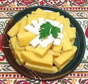

|
Mamaliga / KacamakRomania - Mamaliga ! Bulgaria - Kacamak | ||||
| Makes: Effort: Sched: DoAhead: |
1-3/4 # ** 45+ min Yes |
The Turks bought corn from the Venetian Republic (when they were not at war). The Turks took it to Romania, where it was adopted as superior to millet for porridges and the like. | |||
| Mamaliga is much lighter and easier to make than Italian polenta, because of the coarse corn meal. This dish is now popular throughout the Balkans, Moldova and southwest Ukraine. | |||||
|
3-1/2 1-1/2 2 1 |
c t T c |
Water Salt Butter Cornmeal, coarse (1) |
Make: - (45 min + cooling time)
|